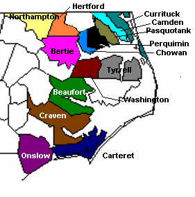

Camden
County Camden
CountyNorth Carolina |
|
 1777 Camden Co formed from Pasquotank Co1790 Camden Co NC Census
1799- NC Senate Committe Roports- Divorce and Alimoney. Sawyer, Willis and Dinah, his wife of Camden NC. In July 1799, Dinah Sawyer "left him and took up with another man adn had a child by him." House and senate action 1803. Deposition of James Dowdy 12 Nov 1799- "that he saw Dinah Sawyer wife of Willis on the bed with Davis Etheridge at the said deponents own house on the 10th of Aug 1799. In Sept 1799, "The deponent and the said Dinah was talking together about her and the said Davis Etheidge agoing off together and the said Dianah said there was but one reason and that was for want of her man..."
12 Nov 1799 Deposition of Mary Dowdy deposes statements similar to above. 1810 Camden Co NC Census
War of 1812 Service - North Carolina
|